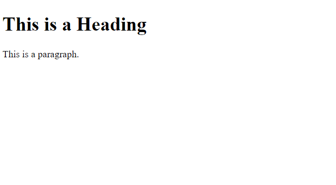
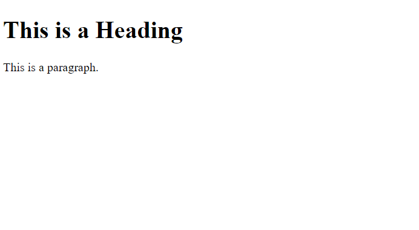

To declare DOCTYPE
HTML headings

Sample Input
Sample Output
Front-end development (also known as client-side development) involves designing and building the graphical user interface (GUI) of a website or web application. It’s all about the parts of a website that users directly interact with—the buttons they click, the forms they fill out, and the visual elements they see on their screens.
To declare DOCTYPE
HTML headings
Sample Input
Sample Output
